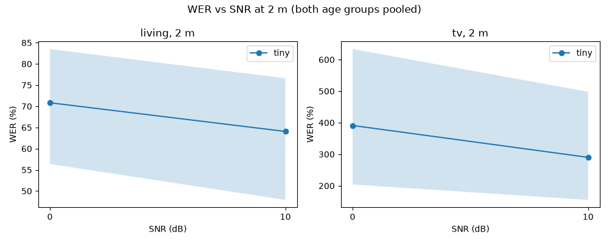
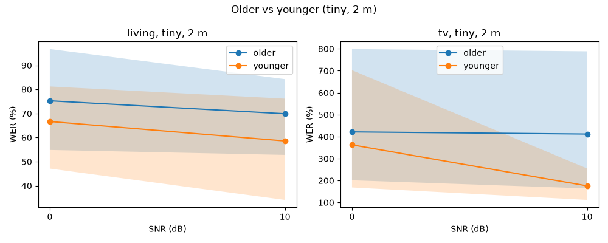
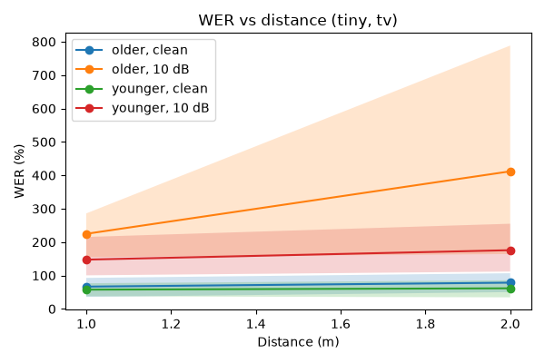

Run id 20261002T133453Z-ad91ab14b21e, config hash ad91ab14b21e. Models: tiny. Usable threshold: WER under 20.0%; bootstrap 100 iters, seed 0.
Best model: tiny (overall WER 180.2%).
| Noise | SNR (dB) | Older WER [95% CI] | Younger WER [95% CI] | Older usable | Younger usable |
|---|---|---|---|---|---|
| living | 0 | 75.3% [54.9%–96.8%] | 66.7% [47.1%–81.2%] | 10.0% | 10.0% |
| living | 10 | 69.9% [52.8%–84.3%] | 58.6% [34.1%–76.2%] | 10.0% | 20.0% |
| none | clean | 78.5% [50.3%–106.7%] | 61.6% [34.6%–85.7%] | 20.0% | 30.0% |
| tv | 0 | 421.5% [201.2%–798.8%] | 362.6% [168.6%–702.5%] | 0.0% | 0.0% |
| tv | 10 | 411.8% [164.2%–788.4%] | 175.8% [111.8%–254.9%] | 0.0% | 0.0% |



In the sim, SNR is fixed at the mic, so distance only changes echo.
| Noise | Condition | Worst-group WER | Other-group WER | Usable rate | Median clip: reference → hypothesis | Worst clip: reference → hypothesis |
|---|---|---|---|---|---|---|
| living | 1 m, 0 dB, younger | 96.0% | 84.9% | 0.0% | the firm represented martha stewart during her 6 month insider trading trial → the training record was in the office during the 6th month in florida trying to control | ivan capelli and thierry boutsen tangled damaging the benetton is nosecone → if i am compelling and tear you boots on a table damaging the feathers on the snowstorm |
| none | 2 m, clean, older | 78.5% | 61.6% | 20.0% | the freeway was nearly deserted so they cruised effortlessly to their exit → the free way was nearly deserves it so they grew it as it looks free to their exit | are they twins or just normal siblings → i will explain to you what you see on the setbench |
| tv | 1 m, 0 dB, older | 667.7% | 345.5% | 0.0% | it is customary to eat hot foods at this meal → so back that is the last one i have ever heard of here in the 10th of a cycling cycle but it is also because you are a bon . | but they were engaged → do not show me that as a fire i do not believe it i do not believe it i do not believe it i do not believe it i do not believe it i do not believe it i do not believe it i do not believe it i do not believe it i do not believe it i do not believe it i do not believe it i do not believe it i do n |
manifest_path: data\manifest.csv clips_per_group: 10 distances_m: - 1.0 - 2.0 noise_files: living: - DLIVING\ch01.wav tv: - data\noise\tv.wav snr_db: - 10.0 - 0.0 include_clean: true models: - tiny device: cpu compute_type: int8 room: dims_m: - 5.0 - 4.0 - 2.7 rt60_s: 0.5 mic_pos_m: - 1.0 - 2.0 - 1.2 source_height_m: 1.2 noise_pos_m: - 4.5 - 3.5 - 1.0 usable_wer: 0.2 bootstrap_iters: 100 cache_dir: data\cache\transcribe runs_dir: runs report: reference_distance_m: 2.0 distance_snr_db: - null - 10.0 distance_noise: tv best_model: null seed: 0